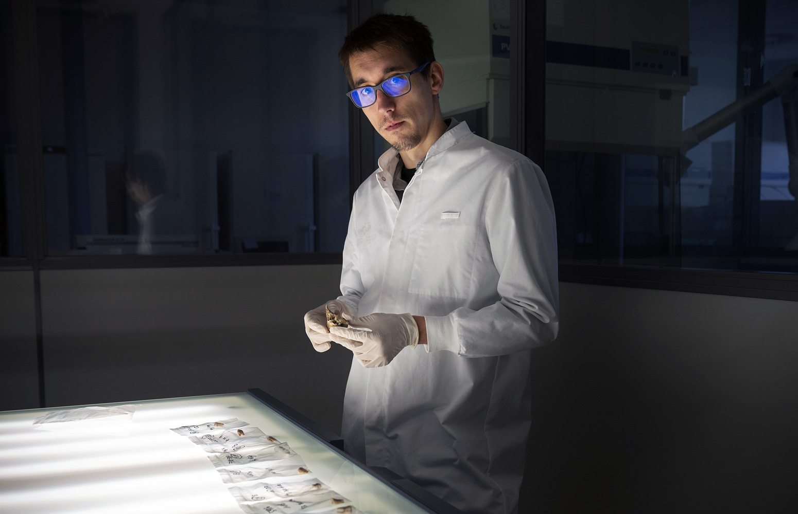
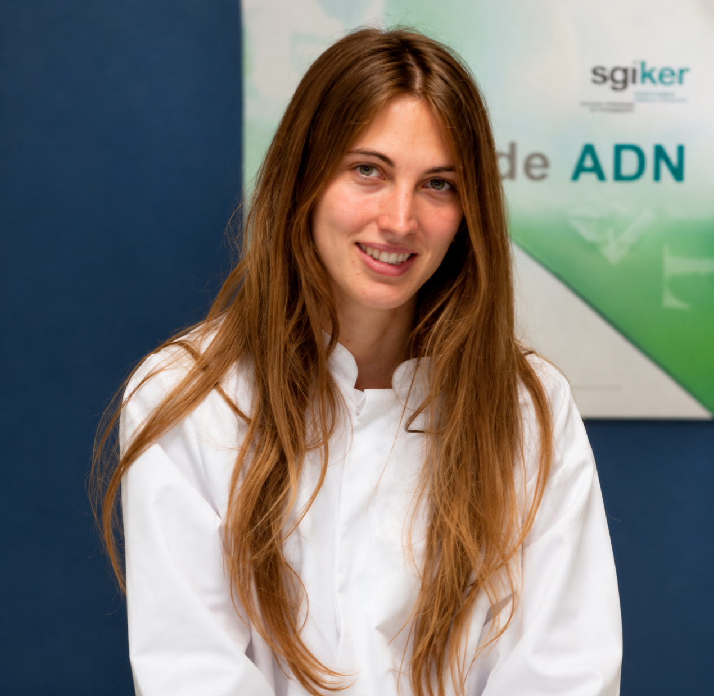
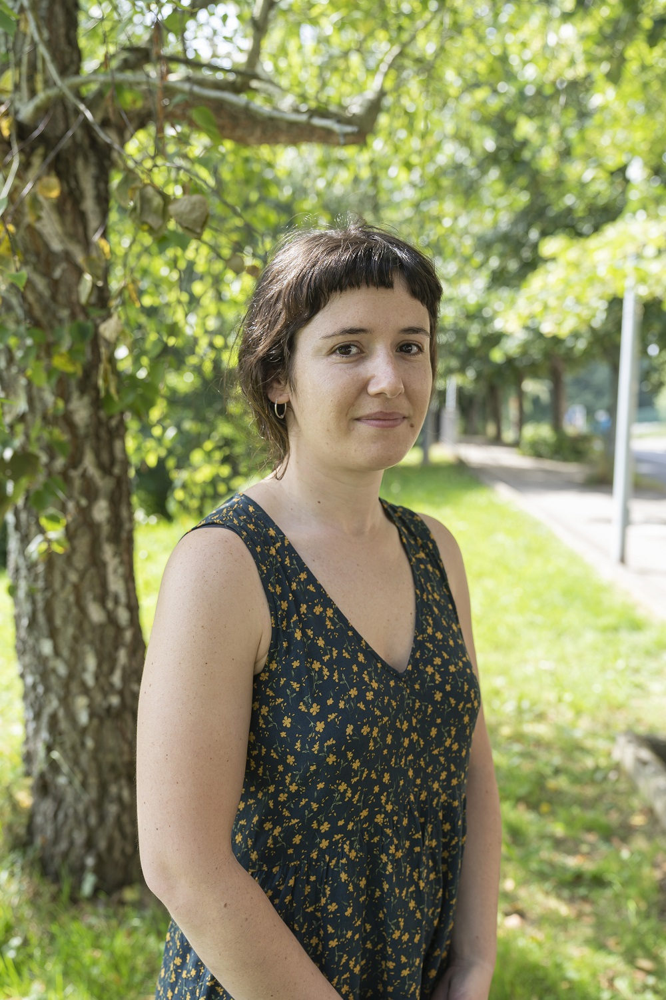
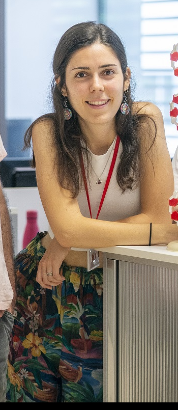
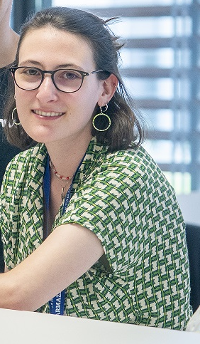
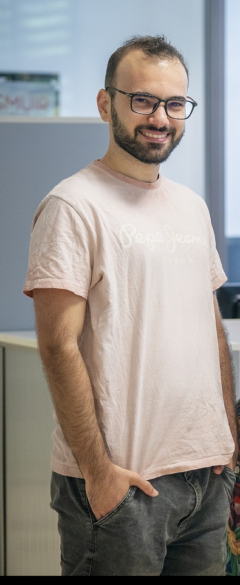
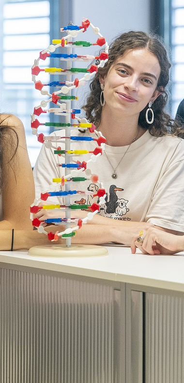
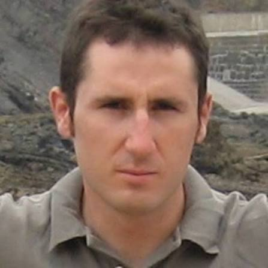

Our team
People behind
the research.
A shared interest in the study of recent and ancient human history.

Miriam Baeta
Head of Forensic Unit

Caterina Raffone
Postdoctoral researcher

Belén Navarro López
Postdoctoral researcher

Núria Puig i Riera
PhD student
Generación de Conocimiento 2022- Ministerio de Ciencia, Innovación y Universidades

Diego Esteve Gómez
PhD student
Basque Government predoctoral grant

Almudena Sánchez Sanz
PhD student
EHU predoctoral grant

Harkaitz Eguiraun
Collaborator
Associate Professor EHU